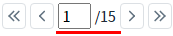

[PageList] 페이지 입력 필드 표시하기
1개요
PageList의 'displaySearchbox' 속성을 사용하여 페이지 입력 필드의 표시 여부를 설정한 예제입니다.
설정에 따른 동작은 다음과 같습니다.
"false": [default] 페이지 입력 필드를 표시하지 않습니다.
"true": 페이지 입력 필드를 표시합니다.
페이지 입력 필드의 값은 메소드 'getSelectedIndex'와 이벤트 'oninputblur'를 통해 확인할 수 있습니다.
2구현된 기능
페이지 입력 필드 표시하기
페이지 입력 필드 표시하지 않기
3예제 테스트 방법
3.1페이지 입력 필드 표시하기
1
STEP 1: 실행된 결과를 확인합니다.
예제 영역 '페이지 입력 필드 표시하기'의 'PageList'를 확인합니다.
화면에 버튼과 페이지 입력 필드, 총 페이지 수 문자열로 구성됩니다.Image 1.브라우저(Chrome) 실행 예시

3.2페이지 입력 필드 표시하지 않기
1
실행된 결과를 확인합니다.
예제 영역 '(기본 설정) 페이지 입력 필드 표시하지 않기'의 'PageList'를 확인합니다.
화면에 버튼과 페이지 수로 구성됩니다.Image 2.브라우저(Chrome) 실행 예시

4구현 예시
4.1속성으로 페이지 입력 필드의 표시 여부 설정하기
속성을 정의합니다.
[필수] displaySearchbox="옵션 값"
(옵션 설명)
- "false": [default] 페이지 입력 필드를 표시하지 않습니다.
- "true": 페이지 입력 필드를 표시합니다.
예시) displaySearchbox="true"
5주요 API
displaySearchbox